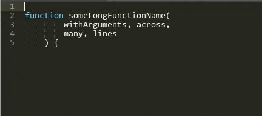
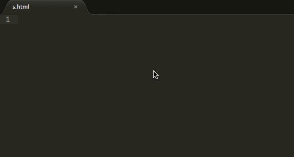
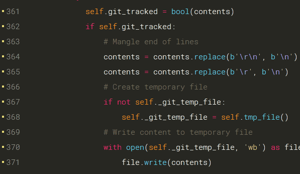
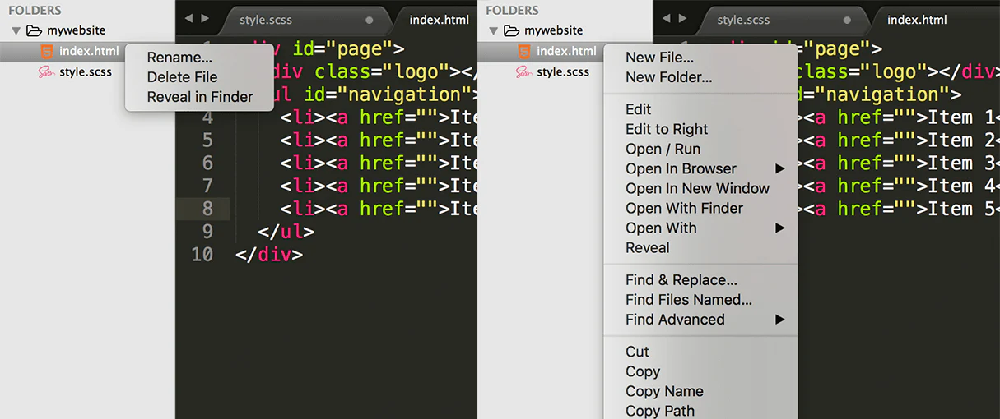
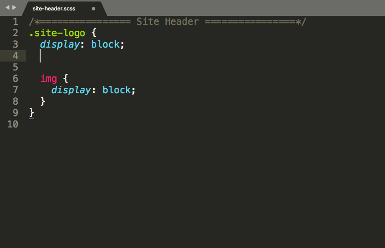
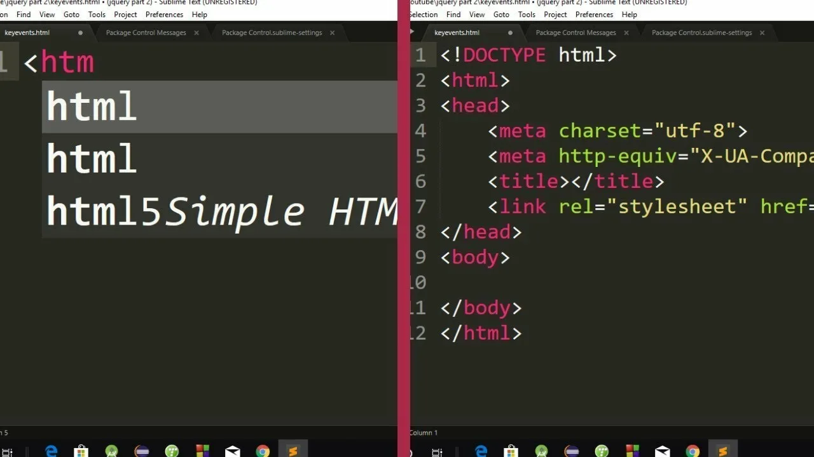
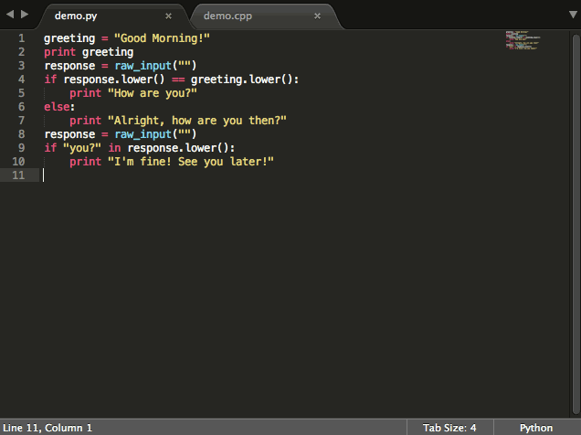

Топ‑7 плагинов для Sublime Text: делаем редактор мощнее
Sublime Text ценят за скорость и минимализм, но его возможности легко расширить с помощью плагинов. Благодаря пакетному менеджеру Package Control можно быстро находить и устанавливать полезные дополнения. Ниже — семь плагинов, которые заметно упростят работу разработчика.
1. DocBlockr

Автоматически генерирует шаблоны документации для функций и методов. Достаточно поставить /** и нажать Tab — плагин создаст структуру комментариев с параметрами и возвращаемым значением. Поддерживает JavaScript, PHP, Python, Ruby и другие языки.
Зачем нужен: помогает соблюдать стандарты документирования и экономит время на ручном написании комментариев.
Скачать2. Emmet

Emmet — настоящая находка для верстальщиков и фронтенд‑разработчиков. Он позволяет писать HTML и CSS в виде коротких сокращений, которые затем разворачиваются в полноценный код. Например, div.container>ul>li*3 превращается в блок с контейнером, списком и тремя элементами списка.
Зачем нужен: экономит кучу времени при создании разметки и ускоряет прототипирование.
Скачать3. GitGutter

Плагин показывает изменения в файлах прямо в боковой панели редактора: добавленные строки подсвечиваются зелёным, удалённые — красным. Это удобно, чтобы быстро понять, что вы изменили в текущей сессии, и не пропустить правки перед коммитом.
Зачем нужен: помогает держать под контролем изменения в коде и упрощает ревью собственных правок.
Скачать4. SideBarEnhancements

Расширяет контекстное меню для файлов и папок в боковой панели. Добавляет полезные действия: копирование пути к файлу, открытие папки в терминале, создание файлов и папок, удаление, переименование и многое другое.
Зачем нужен: избавляет от необходимости выходить из редактора ради простых файловых операций.
Скачать5. ColorPicker

Позволяет выбирать цвет прямо в редакторе: при вызове плагина открывается палитра, где можно кликнуть по нужному оттенку — и код цвета (например, #FF5733 или rgb(255, 87, 51)) автоматически вставляется в файл.
Зачем нужен: особенно полезен при работе с CSS, стилями и дизайном, когда нужно быстро подобрать и вставить цвет.
Скачать6. All Autocomplete

Улучшает стандартное автодополнение в Sublime Text, предлагая варианты не только из текущего файла, но и из всех открытых файлов проекта. Это удобно при работе с большими проектами, где переменные и функции разбросаны по разным файлам.
Зачем нужен: ускоряет написание кода и снижает количество опечаток.
Скачать7. Terminal

Позволяет запускать терминал прямо из Sublime Text — в отдельном окне или во встроенной панели. Вы можете выполнять команды, не переключаясь между окнами, и оставаться в привычной среде разработки.
Зачем нужен: удобно для git‑команд, запуска скриптов, установки зависимостей и других задач, где нужен доступ к командной строке.
СкачатьКак установить плагины
- Откройте Sublime Text и нажмите Ctrl+Shift+P (Windows/Linux) или Cmd+Shift+P (macOS), чтобы вызвать командную панель.
- Введите «Install Package» и выберите соответствующий пункт. Если Package Control ещё не установлен, сначала установите его.
- В появившемся списке начните вводить название плагина (например, «Emmet») и выберите его.
- Дождитесь установки — плагин будет готов к работе сразу после этого.
На что обратить внимание
- Совместимость: большинство плагинов работают на актуальных версиях Sublime Text (4.x).
- Конфликты: если два плагина делают похожие вещи, попробуйте оставить один или настроить их так, чтобы они не мешали друг другу.
- Настройка: многие плагины можно тонко настроить через файлы конфигурации в Sublime, чтобы адаптировать их под свой стиль работы.